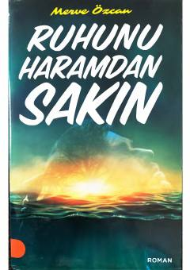

RHRuhiy poklik va axloqiy qadriyatlarga bag'ishlangan ta'sirli roman.
Ushbu kitob insonning ruhiy pokligi, axloqiy qadriyatlar va haromdan saqlanish mavzulariga bag'ishlangan badiiy asardir. Muallif Merve Özcan qahramonlarning ichki kechinmalari orqali hayotiy sinovlar va ma'naviy tanlovlarni yoritib beradi.